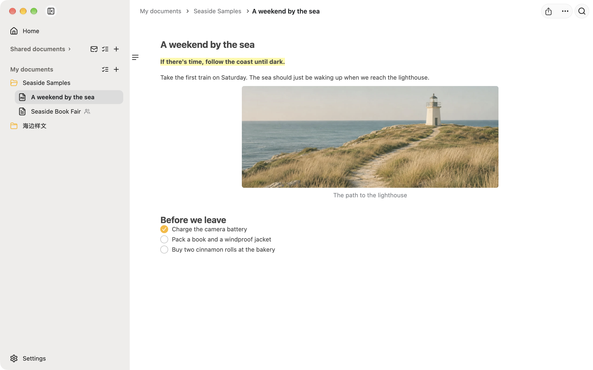
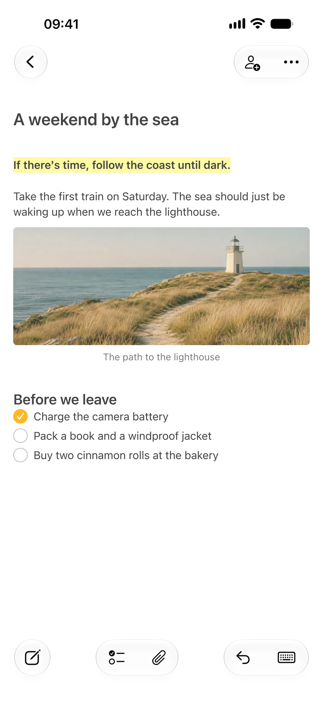
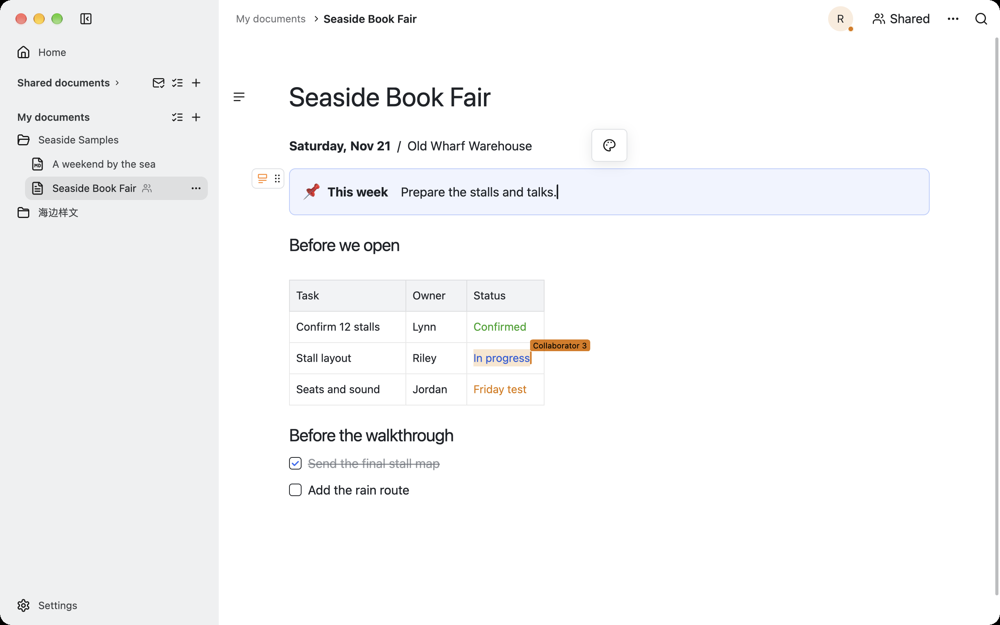

Space to think.
Peace of mind.
A native Markdown document app with iCloud.
Pick up on another device. Collaborate in real time.


Notes theme

A native Markdown document app with iCloud.
Pick up on another device. Collaborate in real time.


